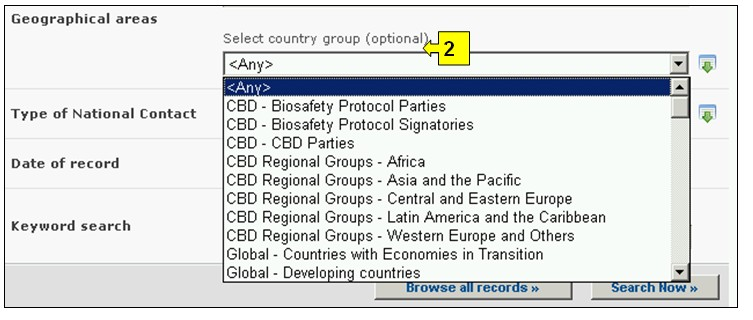
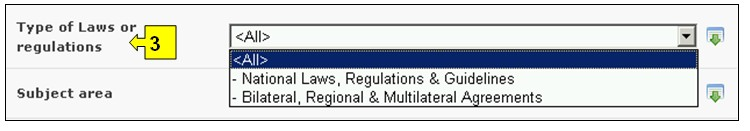

عنوان الموقع على الشبكة: http://bch.cbd.int/database/laws/
بموجب البروتوكول، ان الاطراف مسؤولة عن نشر المعلومات بشأن قوانينها ولوائحها ذات الصلة في غرفة تبادل معلومات السلامة الاحيائية.
ويمكن النفاذ إلى آلية البحث عن المعلومات حول القوانين واللوائح من الوصلة الموجودة في قائمة الاختيارات المنسدلة إيجاد المعلومات على شريط التصفح، أو من الوصلة الموجودة في قائمة الاختيارات إلى اليسار بشأن صفحة إيجاد المعلومات أو من الوصلة في نص القوانين واللوائح على نفس الصفحة.

صورة 17
وبفضل قاعدة البيانات هذه يتسنى للمستعملين البحث عما يلي:
1. القوانين الوطنية؛
2. اللوائح الوطنية؛
3. المبادئ التوجيهية الوطنية؛
4. الاتفاقات الثنائية؛
5. الاتفاقات متعددة الأطراف؛
6. الاتفاقات الإقليمية.
وعلى صفحة البحث عن القوانين واللوائح، يوجد ستة اطر معايير لتنقية عملية البحث في قاعدة البيانات. ولكل واحد منهم هنالك قائمة منسدلة تسمح باختيار المعايير المطلوبة. التركيب الاجمالي لقائمة الخيارات المنسدلة هي الفقرة الاولى على رأس قائمة الخانة. الزر الموجود على جهة اليمين من كل اطار يسمح للمستخدم بتفعيل عدة اختيارات. عندما يكون المستخدم في اسلوب الاختيارات المختلفة، من الممكن ان يضاف معايير مختلفة للاختيارات من خلال الضغط على المعيار المناسب والضغط على مفتاح (Ctrl).

صورة 18
الإطار 1: {اختيار بلد} يسرد جميع أسماء البلدان في قائمة اختيارات منسدلة، ليتسنى للمستعملين اختيار بلد محدد او اكثر في عملية البحث.

صورة 19
الإطار 2: {اختيار مجموعة بلدان} يسرد مجموعات البلدان في قائمة اختيارات منسدلة ليتسنى للمستعملين اختيار مجموعة محددة من البلدان من أجل إجراء بحث. قائمة مجموعة البلدان تتضمن اهم المجموعات الجغرافية و السياسية للبلدان وتسمح لتضييق نطاق البحث بالسجلات المقدمة من قبل اعضاء المجموعة/المجموعات المختارة.

صورة 20
الإطار 3: {انواع القوانين واللوائح} يسرد أنواع القوانين واللوائح، المتوفرة في قاعدة البيانات بحيث تسمح للمستعمل تضييق نطاق البحث ليقتصر على (أ) القوانين الوطنية، اللوائح والتوجيهات أو (ب) الاتفاقات الثنائية، الاقليمية والمتعددة الاطراف.

صورة 21
الإطار 4: { الموضوع} يسرد الموضوعات التي تتناولها القوانين واللوائح المتصلة بتنفيذ البروتوكول. وتسمح هذه القائمة للمستعمل بحصر البحث على مجال واحد أو أكثر للموضوعات.

صورة 22
الإطار 5: {تاريخ السجل المدون} يسمح للمستعمل بأن يحصر البحث على الوقت الذي أُدخل فيه السجل في غرفة تبادل معلومات السلامة الأحيائية. وتعرض قائمة الاختيارات المنسدلة عدداً من الخيارات لكي تقتصر عملية البحث على السجلات المقدمة ضمن المهلة المختارة (على سبيل المثال "آخر يوم"، "الشهر الفائة"، "السنة الفائتة"،الخ).

صورة 23
الإطار 6 {بحث الكلمة الدليلية} ايُعرض فرصة لاستخدام الكلمات الدليلية لتضييق نطاق البحث. ويستطيع المستعمل أن يستخدم تكوين جملة الكلمات الدليلية المعيارية (و/أو) للبحث مع استخدام عدة كلمات أو أجزاء أساسية من الكلمات (استيراد أو تصدير). البحث الذي يستخدم الكلمات الدليلية يصدر نتائج بالسجلات التي تتضمن النص الذي يتم البحث عنه فقط وليس المفردات التي لم يتم ادخالها (على سبيل البحث عن "الذرة" ينتج قائمة بالسجلات التي تحوي فقط كلمة "الذرة" ولكن ليس "Corn" أو "Zea mays").

صورة 24
وتوفر صفحة البحث ثلاثة ازرار لانتاج قائمة بالسجلات. لبدء إجراء البحث. ويسمح زرار للمستعمل بأن يشغّل بحثاً قائماً على معايير البحث المختارة في خانات آلية البحث. وتجئ نتائج البحث مرتبة أبجدياً وفقاً لأسم البلد. ويسمح اختيار تصفح جميع السجلات للمستعمل أن يحصل على قائمة بجميع السجلات المدونة في قاعدة البيانات هذه.

صورة 25
وتوجد لدى صفحات نتائج البحث آلية تصنيف أعلى قائمة السجلات. ويمكِّن استخدام هذه الآلية لتصنيف السجلات وفقاً للمعايير المحددة لتلك الفئة من المعلومات. ويلاحظ هنا أن المعايير تتغيَّر عندما يختار المستعمل معايير بحث مختلفة.

صورة 26
مثال: قد يرغب المستعمل نفسه في تحديد القوانين الوطنية واللوائح في بلدان رابطة أمم جنوب شرق آسيا. ويختار المستعمل آسيا - المحيط الهادئ (Asia - Pacific) - رابطة أمم جنوب شرق آسيا (Association of southeast Asians Nations) في إطار اختيار مجموعة البلدان.اختر القوانين الوطنية، اللوائح والتوجيهات في اطار أنواع القوانين واللوائح. واختيار زر إبحث الآن، يعرض مجموعة نتائج تمكن المستخدم من اختيار اي سجل لدراسة التقارير من بلدان محددة في المنطقة.

صورة 27

صورة 28